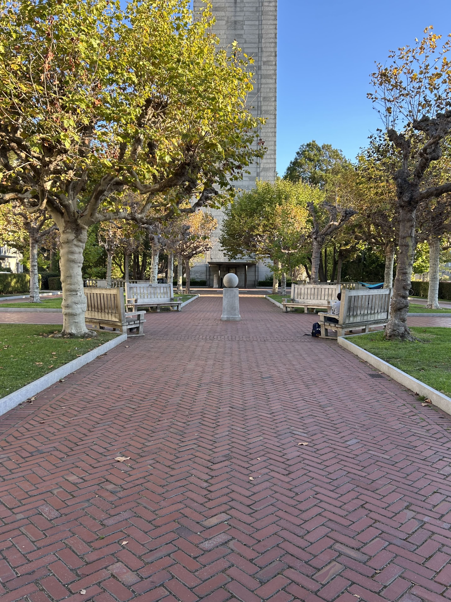
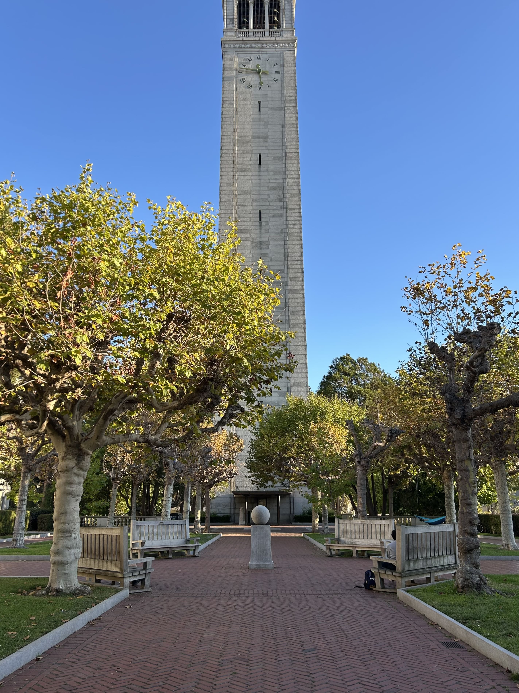
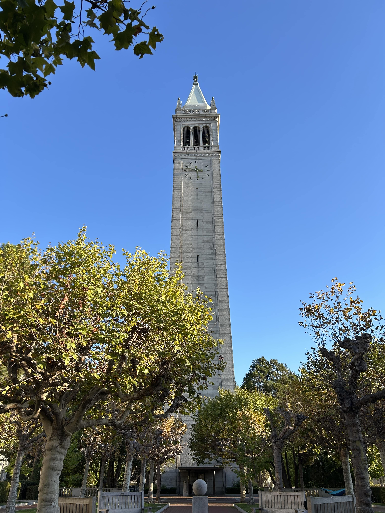

Project 3: (Auto)stitching and Photo Mosaics
Name: Alexander Waldman
Part A: Image Warping and Mosaicing
A.1: Shoot the Pictures
Before I could begin creating mosaics by registering, projective warping, resampling, and compositing image data, I needed to capture photos that were well suited for this project. Inspired by Cal's detailed architecture and lush nature, I took pictures of some of my favorite places on campus, making sure to keep the center of projection fixed while I rotated my camera.




The Campanile



A.2: Recover Homographies
In order to warp my images into alignment, I first needed to solve for the transformation matrix that allows us to map one perspective projection to another. This matrix is called the homography.